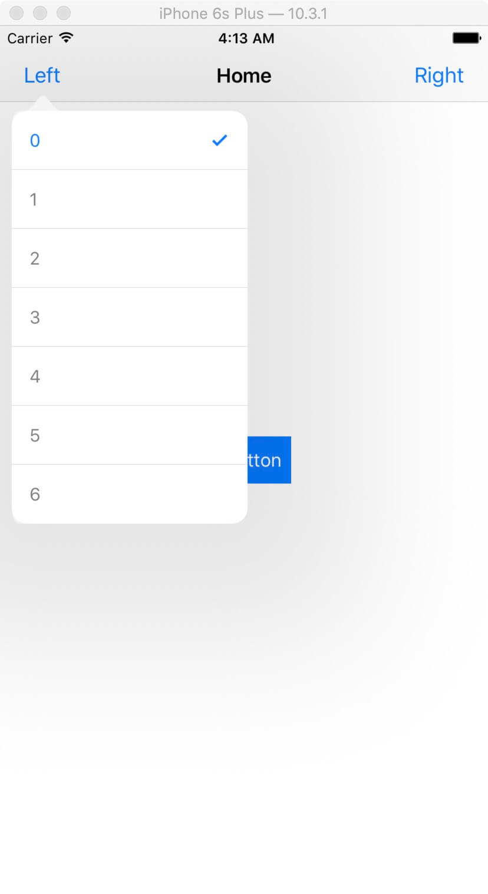
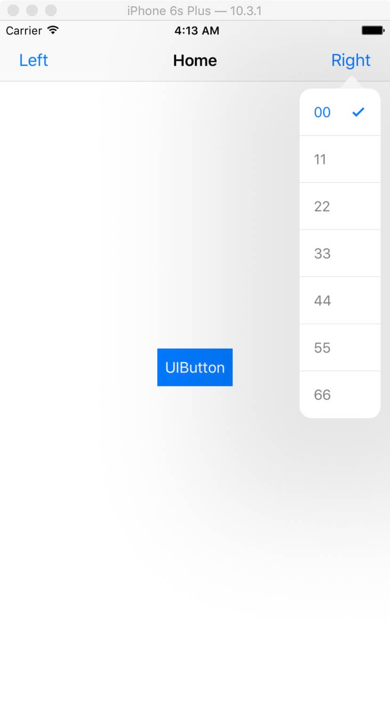
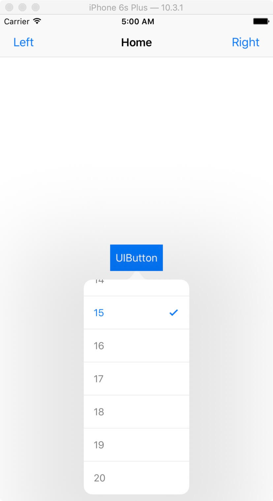
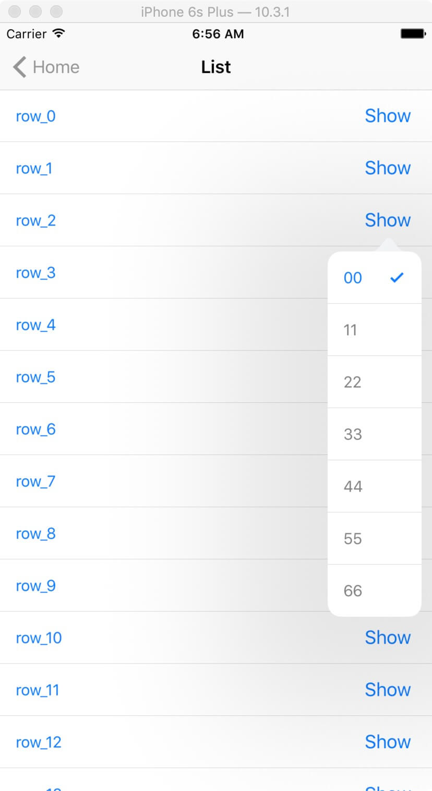

NNPopoverButton
一键弹出原生 Popover
基于 UIPopoverPresentationController 的极简 UIButton 封装，列表选择与自定义内容开箱即用。




核心特性
把原生 Popover 流程收敛到一个按钮上，减少样板代码。
- 原生体验 直接使用系统 Popover，箭头方向、自适应样式与系统一致。
-
内置列表
默认
NNPopoverTableController，传入字符串数组即可展示选项。 -
自定义内容
通过
contentVC注入任意视图控制器，扩展菜单之外的场景。 - 回调灵活 同时支持 Delegate 与闭包，选中后自动 dismiss。
安装
通过 CocoaPods 引入，在 Podfile 中添加：
pod 'NNPopoverButton'然后执行：
pod install运行示例工程：克隆仓库后进入 Example 目录执行 pod install，再用 Xcode 打开 NNPopoverButton.xcworkspace。
快速用法
创建按钮、配置列表与宽度，即可弹出选择菜单：
import NNPopoverButton
let button = NNPopoverButton(type: .custom)
button.setTitle("选项", for: .normal)
button.list = ["复制", "粘贴", "删除"]
button.contentWidth = 160
button.block = { sender, tableView, indexPath in
print("选中第 \(indexPath.row) 项")
}
view.addSubview(button)使用自定义内容控制器：
button.contentVC = MyCustomViewController()
button.contentSize = CGSize(width: 240, height: 180)
button.arrowDirection = .up
button.offset = UIOffset(horizontal: 0, vertical: 4)主要 API
NNPopoverButton 常用属性与方法一览。
| 名称 | 类型 | 说明 |
|---|---|---|
list |
[String] |
默认表格内容数据源 |
contentVC |
UIViewController |
弹出内容，默认为表格控制器 |
contentWidth |
CGFloat |
表格内容宽度，默认屏幕一半 |
contentSize |
CGSize |
固定弹出尺寸，优先于自动高度 |
arrowDirection |
UIPopoverArrowDirection |
箭头方向；rawValue 为 0 时无箭头 |
offset |
UIOffset |
弹出位置相对按钮的偏移 |
rowCount |
Int |
可见行数上限，用于控制高度 |
isTapBackViewDismiss |
Bool |
点击外部是否关闭，默认 true |
delegate / block |
回调 | 选中行时触发 |
presentPopover(...) |
方法 | 主动弹出内容控制器 |
dismiss() |
方法 | 关闭当前 Popover |
开始使用
完整示例与实现细节见仓库源码，欢迎 Star 与 Issue。